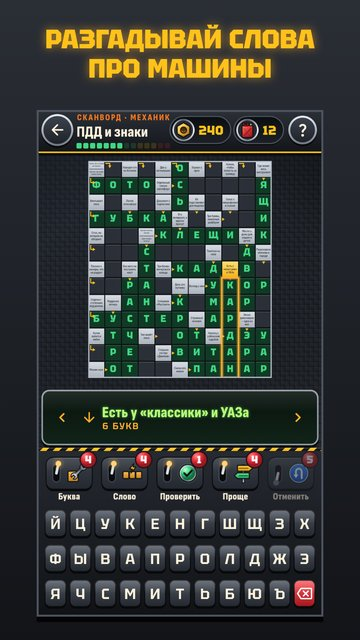

Авто Сканворды
Сканворды для тех, кто за рулём
Сканворды и кроссворды для водителей и всех, кто любит машины: устройство авто, марки, ПДД и дорога.
За каждый решённый выпуск в твой гараж въезжает новая деталь — кузов, мотор, колёса, салон, фары. Собери машину целиком, и она встанет в свой бокс.

- 300 сканвордов со стрелками и 300 филвордов.
- 15 тем: под капотом, марки и модели, ПДД и знаки, советский автопром, грузовики, мотоциклы, гонки и ралли, водительский сленг и другие.
- Виртуальный гараж: 50 машин в пяти залах — от «Советской классики» до «Будущего». Повторов нет.
- Карточка машины: годы выпуска и интересные факты. Без подсказок — деталь золотая.
- Дядя Миша, механик из соседнего гаража, шутит и подсказывает.
- Уровни «Ученик», «Водитель», «Механик» и большие сетки «Дальний рейс».
- Выпуск дня, слово дня и задания; праздничные выпуски к Новому году, 23 февраля и Дню автомобилиста.
- Подсказки: открой букву или слово, проверь себя. Три бесплатные каждый день.
- Головоломки работают без интернета.
Заводи мотор — и вперёд, разгадывать!